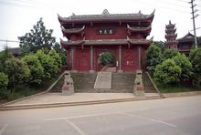

| 东山岭
|
|
| 东山岭，位余干县城中心，面积0.11平方公里，海拔56.2米。
山上东有峰，状如羊角，旧名羊角山，又名羊角峰。唐天宝六年（747年），敕改为余干山。宋时以山平地崛起，
巍然如冠，得名冠山。明知县古青高改羊角峰为龙角峰。清时以山居县治东，称东岗山，俗称东岗岭。建国后，改名东山岭。 |
| 憩园
|
| 憩园，位于东山岭南麓通琵琶洲的曲堤上，和东山岭中峰的干越亭遥相呼应，于1997年建成向游人开放。
憩园设施为仿古建筑。园长不足一里，宽不过数丈，然布局合理，亭台、茶馆、歌轩、水榭，精美绝伦；拱桥曲廊，花圃草坪，石椅石凳，随地赋形；青松
翠柏，云杉棕榈，女贞文竹，奇花异草，点缀其间。园中曲径小道，用花冈石铺成。两侧置石栏铁链，既给游人以安全感，又不失园林装饰情调。堤下湖面
宽广，视野开阔，清风送爽，微风鼓浪，铿然有声，恰似琵琶玉韵。亭廊轩榭间，石刻楹联，对仗工整，寓意深远，耐人咀嚼。书法功底深厚，遒劲有力，
或楷或隶或篆，书香拂面，文风馨然。正是：“眼前风景道不尽，芳渚春色畅神思”。憩园大门，紧挨沿湖路，面向东山中峰，为仿古式牌坊建筑，钢筋水泥
构架，重檐庑殿顶，四柱三门，高约6米，宽约9米。门旁庑房错落，白粉墙、琉璃白簇拥着大门。正门一幅楹联云：“市列琳琅车水马龙开闹市，湖光潋滟云
章履绮簇平湖”，坊额正中为镏金、颜体楷书“憩园”二字，镶以彩色霓虹灯管。 |
|
| 应天寺
|
| 
| 应天寺，又名梅王殿，位于余干县梅港乡梅港街后的寺臂岭上，距县城约29公里。始建于南朝宋孝建
（454-456）年间。清乾隆年间两次维修，是为纪念西汉开国大将梅鋗的专寺。相传寺臂岭，山形山形奇异，如睡椅状。西汉梅鋗葬在此地。有风水师说道：
此地有天子之气。到南朝宋文帝元嘉年间，梅鋗墓果然有紫气薄天，皇帝急命当地官员截断其脉。故而寺名为“应天”。寺宇背山而建，坐北朝南。穿斗式木
构架，单檐硬山顶，前后两进，前低后高，中有天井。内有梅鋗塑像，樟木雕成，高2米余，形象威武，令人肃然起敬。 |